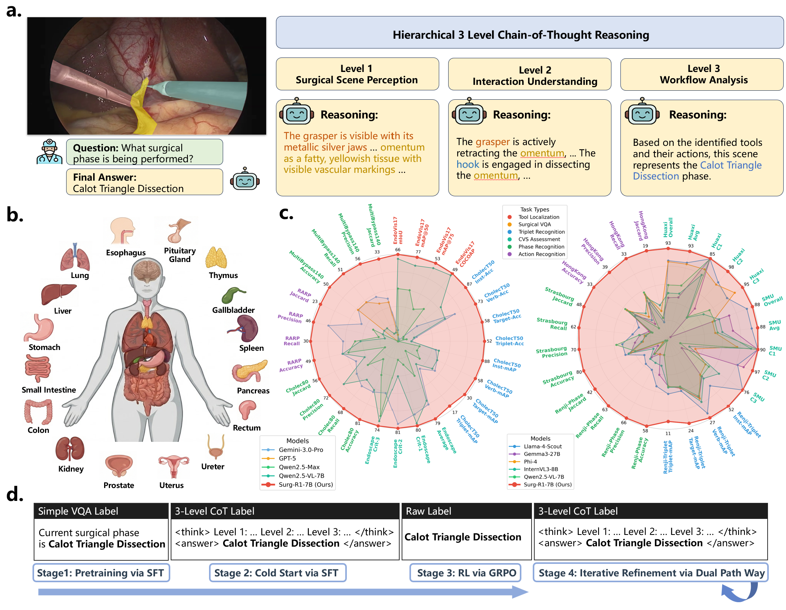
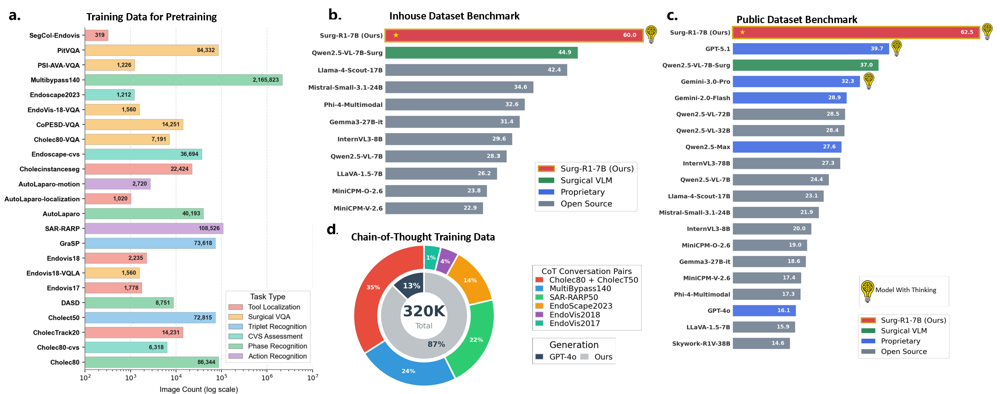
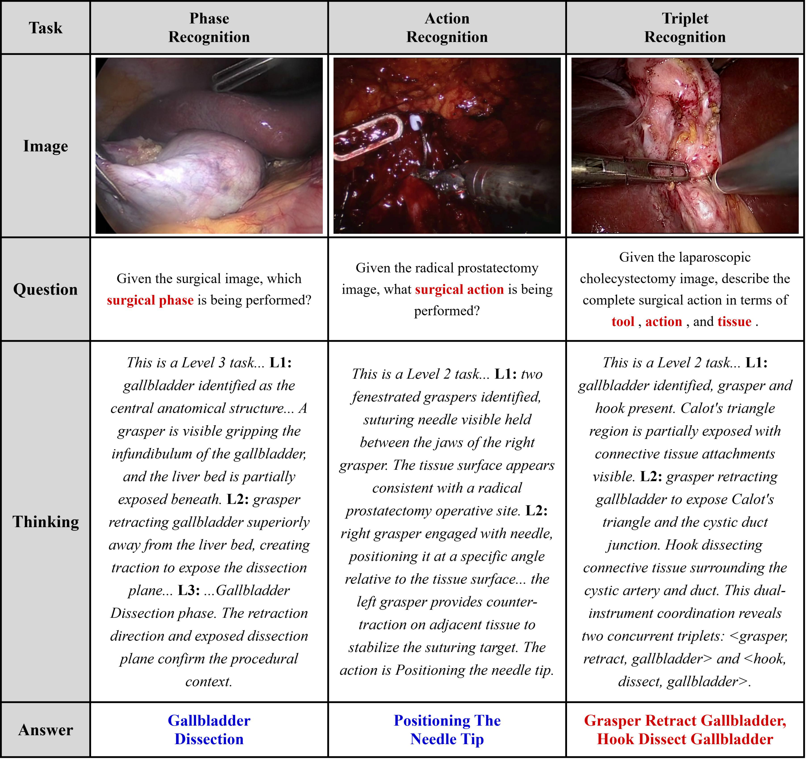

Abstract
Surgical scene understanding demands not only accurate predictions but also interpretable reasoning that surgeons can verify against clinical expertise. However, existing surgical vision-language models generate predictions without reasoning chains, and general-purpose reasoning models fail on compositional surgical tasks without domain-specific knowledge. We present Surg-R1, a surgical Vision-Language Model that addresses this gap through hierarchical reasoning trained via a four-stage pipeline. Our approach introduces three key contributions: (1) a three-level reasoning hierarchy decomposing surgical interpretation into perceptual grounding, relational understanding, and contextual reasoning; (2) the largest surgical chain-of-thought dataset with 320,000 reasoning pairs; and (3) a four-stage training pipeline progressing from supervised fine-tuning to group relative policy optimization and iterative self-improvement.
Evaluation on SurgBench, comprising four public benchmarks and six multi-center external validation datasets from five institutions, demonstrates that Surg-R1 achieves the highest Arena Score (57.7%) on public benchmarks versus Gemini 3.0 Pro (29.8%) and GPT-5.1 (28.5%), outperforming both proprietary reasoning models and specialized surgical VLMs on the majority of tasks spanning triplet recognition, phase recognition, action recognition, and critical view of safety assessment, with a 15.2 percentage point improvement over the strongest surgical baseline on external validation.
Method Overview
Level 1 — Perceptual Grounding
Identifies surgical instruments and anatomical structures with their visual characteristics (color, shape, texture).
Level 2 — Relational Understanding
Analyzes tool-tissue-action interactions to interpret what each instrument is doing and to which tissue.
Level 3 — Contextual Reasoning
Synthesizes perceptual and relational evidence for phase recognition, safety assessment, and workflow analysis.
4-Stage Training Pipeline
SFT pretraining → Cold-start CoT supervision → GRPO reinforcement learning → Iterative dual-pathway refinement.

Experimental Results
Comprehensive evaluation across 13 datasets, 6 surgical AI tasks, and comparisons against 20+ state-of-the-art models.

Qualitative Results
Representative examples of Surg-R1's hierarchical reasoning across five surgical AI tasks.

BibTeX
@article{jiang2026surgr1,
title={Surg-R1: A Hierarchical Reasoning Foundation Model for Scalable and Interpretable Surgical Decision Support with Multi-Center Clinical Validation},
author={Jian Jiang and Chenxi Lin and Yiming Gu and Zengyi Qin and Zhitao Zeng and Kun Yuan and Yonghao Long and Xiang Xia and Cheng Yuan and Yuqi Wang and Zijie Yue and Kunyi Yang and Yuting Zhang and Zhu Zhuo and Dian Qin and Xin Wang and NG Chi Fai and Brian Anthony and Daguang Xu and Guy Rosman and Ozanan Meireles and Zizhen Zhang and Nicolas Padoy and Hesheng Wang and Qi Dou and Yueming Jin and Yutong Ban},
journal={arXiv preprint arXiv:2603.12430},
year={2026}
}